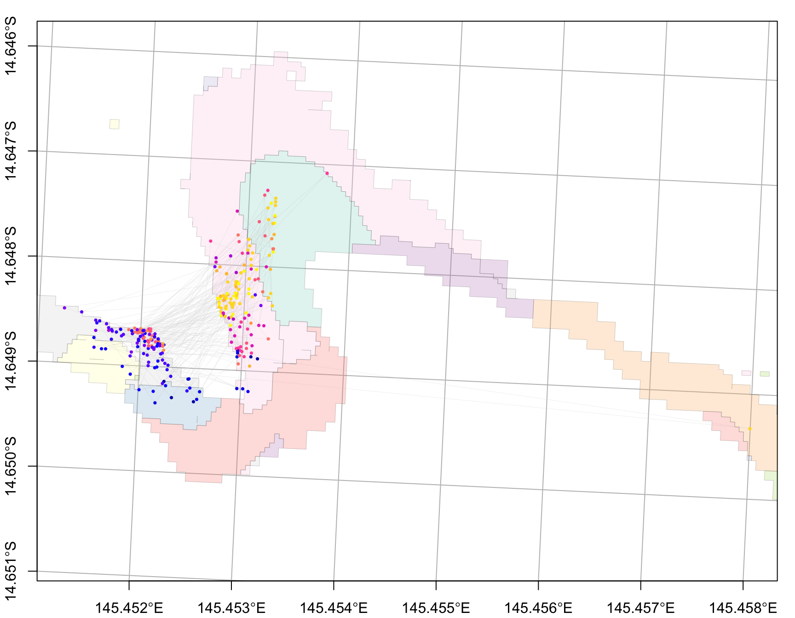
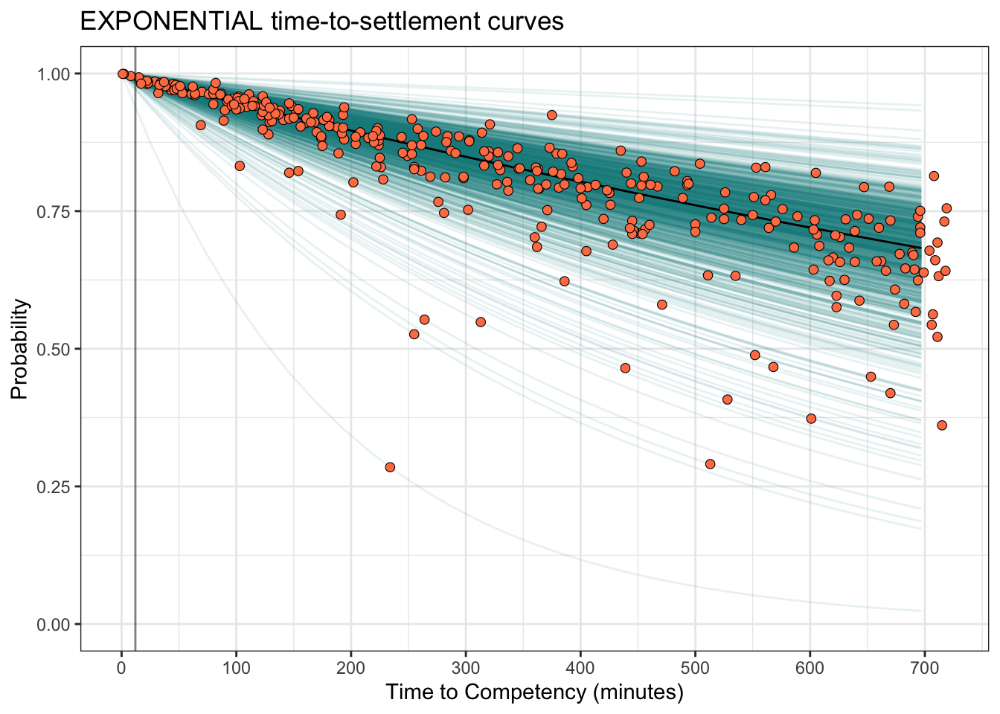

Overview
This tutorial runs the core coralseed workflow for a simulated reseeding event at Lizard Island:
- load reef and benthic habitat maps;
- convert habitat classes into a spatial seascape settlement-probability surface;
- seed particles from an external dispersal model;
- simulate settlement;
- estimate settlement density and settlement summaries;
- visualise the output.
Load example spatial data
The package includes Lizard Island example data in inst/extdata. These are accessed with system.file() so the tutorial works after installation.
lizard_benthic_map <- system.file(
"extdata", "Lizard_Benthic.geojson",
package = "coralseed"
) |>
sf::st_read(quiet = TRUE)
lizard_reef_map <- system.file(
"extdata", "Lizard_Geomorphic.geojson",
package = "coralseed"
) |>
sf::st_read(quiet = TRUE)
lizard_particles_sf <- system.file(
"extdata", "lizard_del_14_1512_sim1_10.json",
package = "coralseed"
) |>
sf::st_read(quiet = TRUE)Build the seascape probability surface
seascape_probability() combines reef geomorphology and benthic habitat maps and assigns settlement probabilities to habitat classes.
lizard_seascape <- seascape_probability(
reefoutline = lizard_reef_map,
habitat = lizard_benthic_map
)
lizard_seascapeSimple feature collection with 669 features and 3 fields
Geometry type: POLYGON
Dimension: XY
Bounding box: xmin: 1628792 ymin: 8347643 xmax: 1633662 ymax: 8354525
Projected CRS: AGD84 / AMG zone 53
# A tibble: 669 × 4
# Groups: class [7]
class geometry habitat_id settlement_probability
* <chr> <POLYGON [m]> <chr> <dbl>
1 Back Reef Slope ((1629141 8349637, 1629142… Back_Reef… 0.46
2 Back Reef Slope ((1629009 8350083, 1629009… Back_Reef… 0.54
3 Back Reef Slope ((1628986 8350109, 1628985… Back_Reef… 0.57
4 Back Reef Slope ((1628986 8350114, 1628986… Back_Reef… 0.45
5 Back Reef Slope ((1628996 8350109, 1628997… Back_Reef… 0.68
6 Back Reef Slope ((1628948 8350136, 1628938… Back_Reef… 0.45
7 Back Reef Slope ((1629017 8350158, 1629017… Back_Reef… 0.52
8 Back Reef Slope ((1628929 8350162, 1628929… Back_Reef… 0.76
9 Back Reef Slope ((1629009 8350189, 1629009… Back_Reef… 0.64
10 Back Reef Slope ((1629014 8350189, 1629014… Back_Reef… 0.47
# ℹ 659 more rowsSeed particles
seed_particles() takes particle positions from an external dispersal model and adds biological filters, including time limits, competency, mortality, and settlement probability.
lizard_particles <- seed_particles(
input = lizard_particles_sf,
zarr = FALSE,
set.centre = TRUE,
seascape = lizard_seascape,
probability = "additive",
limit.time = 12,
competency.function = "exponential",
crs = 20353,
simulate.mortality = "typeIII",
simulate.mortality.n = 0.1,
return.plot = TRUE,
return.summary = TRUE,
silent = FALSE
)Inspect the returned object.
names(lizard_particles)[1] "seed_particles" "multiplot" "summary"
lizard_particles$summary Metric Value
1 Number of particle tracks 1000
2 Seed setting [No seed set]
3 Start time 2022-12-16
4 End time 2022-12-16 12:57:00
5 Dispersal time (hrs) 12.95
6 Total mortality by tmax 70Settle particles
settle_particles() applies spatial settlement probability and returns the simulated settled subset.
lizard_settlers <- settle_particles(
lizard_particles,
probability = "additive",
return.plot = FALSE,
silent = TRUE
)
names(lizard_settlers)[1] "points" "paths" Plot settled particles
plot_particles(
lizard_settlers$points,
lizard_seascape
)
Estimate settlement density
settlement_density() converts settled particles into a spatial density surface.
lizard_settlement_density <- settlement_density(
lizard_settlers$points
)
lizard_settlement_density$count
Simple feature collection with 518 features and 1 field
Geometry type: POLYGON
Dimension: XY
Bounding box: xmin: 1630920 ymin: 8354121 xmax: 1631660 ymax: 8354401
Projected CRS: AGD84 / AMG zone 53
First 10 features:
x count
1 POLYGON ((1630920 8354121, ... NA
2 POLYGON ((1630940 8354121, ... NA
3 POLYGON ((1630960 8354121, ... NA
4 POLYGON ((1630980 8354121, ... NA
5 POLYGON ((1631000 8354121, ... NA
6 POLYGON ((1631020 8354121, ... NA
7 POLYGON ((1631040 8354121, ... NA
8 POLYGON ((1631060 8354121, ... NA
9 POLYGON ((1631080 8354121, ... NA
10 POLYGON ((1631100 8354121, ... NA
$density
Simple feature collection with 518 features and 2 fields
Geometry type: POLYGON
Dimension: XY
Bounding box: xmin: 1630920 ymin: 8354121 xmax: 1631660 ymax: 8354401
Projected CRS: AGD84 / AMG zone 53
First 10 features:
x count density
1 POLYGON ((1630920 8354121, ... NA NA
2 POLYGON ((1630940 8354121, ... NA NA
3 POLYGON ((1630960 8354121, ... NA NA
4 POLYGON ((1630980 8354121, ... NA NA
5 POLYGON ((1631000 8354121, ... NA NA
6 POLYGON ((1631020 8354121, ... NA NA
7 POLYGON ((1631040 8354121, ... NA NA
8 POLYGON ((1631060 8354121, ... NA NA
9 POLYGON ((1631080 8354121, ... NA NA
10 POLYGON ((1631100 8354121, ... NA NA
$area
Simple feature collection with 1 feature and 1 field
Geometry type: POLYGON
Dimension: XY
Bounding box: xmin: 1630920 ymin: 8354121 xmax: 1631653 ymax: 8354394
Projected CRS: AGD84 / AMG zone 53
polygons area
1 POLYGON ((1630952 8354208, ... 61063 [m^2]Summarise settlement
settlement_summary() gives spatially explicit summary metrics, usually binned to a selected cell size.
lizard_settlement_summary <- settlement_summary(
lizard_particles,
lizard_settlers,
cellsize = 50
)
lizard_settlement_summary Description Value
1 1) Settlement success: -
2 How many larvae settled? 272
3 What percent of released larvae settled? 27.2
4 2) Time to settlement -
5 What was the average time to settlement? 12
6 What was the min/max time to settlement? 12
7 3) Larval distance -
8 How far on average did larvae travel before settling? 313
9 What is the max of dispersal distances? 1200.2
10 4) Dispersal footprint -
11 What is the total spatial footprint of the restoration? 64380.1488469933
12 How many gridcells were seeded within the area? 58
13 What is the median count per gridcell? 3
14 What is the max counts per gridcell? 24
15 What is the median density? 0.0075
16 5) Spatial pattern -
17 How far apart are the settlers? 5.95970772801065
18 How clustered are the settlers? 0.27
Units
1 -
2 Total number of larvae settled
3 Percent settlement success
4 -
5 Median settlement (hrs)
6 Min/max settlement (hrs)
7 -
8 Distance (meters)
9 Distance (meters)
10 -
11 Meters ^2
12 n grids (50*50,m)
13 count (50*50,m)
14 count (50*50,m)
15 density (50*50,m)
16 -
17 Nearest-neighbour distance (metres)
18 Clark-Evans indexInteractive map
Interactive leaflet widgets can be heavy in pkgdown builds. For stable documentation, the live map_coralseed() call is shown but not evaluated by default.
map_coralseed(
seed_particles_input = lizard_particles,
settle_particles_input = lizard_settlers,
settlement_density_input = lizard_settlement_density,
seascape_probability = lizard_seascape,
restoration.plot = c(100, 100),
show.footprint = TRUE,
show.tracks = TRUE,
subsample = 1000,
webGL = TRUE
)To save a stable HTML widget for pkgdown:
lizard_map <- map_coralseed(
seed_particles_input = lizard_particles,
settle_particles_input = lizard_settlers,
settlement_density_input = lizard_settlement_density,
seascape_probability = lizard_seascape,
restoration.plot = c(100, 100),
show.footprint = TRUE,
show.tracks = TRUE,
subsample = 1000,
webGL = TRUE
)
fs::dir_create("vignettes/www")
htmlwidgets::saveWidget(
lizard_map,
"vignettes/www/lizard_map.html",
selfcontained = TRUE
)Then embed it manually:
Model flowchart
flowchart_coralseed(
lizard_particles,
lizard_settlers,
multiplier = 1000,
postsettlement = 0.8
)[Total particles 1,000,000 | n tracks 1,000 | Larvae per track = 1,000 | Maximum dispersal time = 720 minutes]
Key outputs
list(
seascape = lizard_seascape,
seeded_particles = lizard_particles,
settlers = lizard_settlers,
settlement_density = lizard_settlement_density,
settlement_summary = lizard_settlement_summary
)$seascape
Simple feature collection with 669 features and 3 fields
Geometry type: POLYGON
Dimension: XY
Bounding box: xmin: 1628792 ymin: 8347643 xmax: 1633662 ymax: 8354525
Projected CRS: AGD84 / AMG zone 53
# A tibble: 669 × 4
# Groups: class [7]
class geometry habitat_id settlement_probability
* <chr> <POLYGON [m]> <chr> <dbl>
1 Back Reef Slope ((1629141 8349637, 1629142… Back_Reef… 0.46
2 Back Reef Slope ((1629009 8350083, 1629009… Back_Reef… 0.54
3 Back Reef Slope ((1628986 8350109, 1628985… Back_Reef… 0.57
4 Back Reef Slope ((1628986 8350114, 1628986… Back_Reef… 0.45
5 Back Reef Slope ((1628996 8350109, 1628997… Back_Reef… 0.68
6 Back Reef Slope ((1628948 8350136, 1628938… Back_Reef… 0.45
7 Back Reef Slope ((1629017 8350158, 1629017… Back_Reef… 0.52
8 Back Reef Slope ((1628929 8350162, 1628929… Back_Reef… 0.76
9 Back Reef Slope ((1629009 8350189, 1629009… Back_Reef… 0.64
10 Back Reef Slope ((1629014 8350189, 1629014… Back_Reef… 0.47
# ℹ 659 more rows
$seeded_particles
$seeded_particles$seed_particles
Simple feature collection with 680199 features and 12 fields
Geometry type: POINT
Dimension: XY
Bounding box: xmin: 1630876 ymin: 8352221 xmax: 1633558 ymax: 8354455
Projected CRS: AGD84 / AMG zone 53
# A tibble: 680,199 × 13
id time dispersaltime settlement_point state competency
* <chr> <dttm> <dbl> <dbl> <dbl> <chr>
1 NGI1 2022-12-16 00:00:00 0 720 0 incompetent
2 NGI1 2022-12-16 00:01:00 1 720 0 incompetent
3 NGI1 2022-12-16 00:02:00 2 720 0 incompetent
4 NGI1 2022-12-16 00:03:00 3 720 0 incompetent
5 NGI1 2022-12-16 00:04:00 4 720 0 incompetent
6 NGI1 2022-12-16 00:05:00 5 720 0 incompetent
7 NGI1 2022-12-16 00:06:00 6 720 0 incompetent
8 NGI1 2022-12-16 00:07:00 7 720 0 incompetent
9 NGI1 2022-12-16 00:08:00 8 720 0 incompetent
10 NGI1 2022-12-16 00:09:00 9 720 0 incompetent
# ℹ 680,189 more rows
# ℹ 7 more variables: geometry <POINT [m]>, class <fct>, habitat_id <fct>,
# settlement_probability <dbl>, settlement_outcome <int>, final <dbl>,
# outcome <fct>
$seeded_particles$multiplot
$seeded_particles$summary
Metric Value
1 Number of particle tracks 1000
2 Seed setting [No seed set]
3 Start time 2022-12-16
4 End time 2022-12-16 12:57:00
5 Dispersal time (hrs) 12.95
6 Total mortality by tmax 70
$settlers
$settlers$points
Simple feature collection with 272 features and 5 fields
Geometry type: POINT
Dimension: XY
Bounding box: xmin: 1630920 ymin: 8354121 xmax: 1631653 ymax: 8354394
Projected CRS: AGD84 / AMG zone 53
# A tibble: 272 × 6
# Groups: id [272]
id class time dispersaltime geometry cat
* <chr> <fct> <dttm> <dbl> <POINT [m]> <fct>
1 NGI10 Reef… 2022-12-16 11:21:00 681 (1631120 8354296) settled
2 NGI1… Reef… 2022-12-16 11:31:00 691 (1631108 8354255) settled
3 NGI1… Reef… 2022-12-16 08:51:00 531 (1631138 8354217) settled
4 NGI1… Reef… 2022-12-16 08:51:00 531 (1630995 8354224) settled
5 NGI1… Reef… 2022-12-16 09:28:00 568 (1631009 8354226) settled
6 NGI1… Reef… 2022-12-16 11:37:00 697 (1631105 8354266) settled
7 NGI1… Back… 2022-12-16 01:53:00 113 (1631054 8354164) settled
8 NGI1… Reef… 2022-12-16 08:33:00 513 (1631013 8354210) settled
9 NGI1… Reef… 2022-12-16 05:21:00 321 (1631082 8354304) settled
10 NGI1… Oute… 2022-12-16 11:55:00 715 (1631141 8354362) settled
# ℹ 262 more rows
$settlers$paths
Simple feature collection with 272 features and 3 fields
Geometry type: LINESTRING
Dimension: XY
Bounding box: xmin: 1630888 ymin: 8354121 xmax: 1631653 ymax: 8354416
Projected CRS: AGD84 / AMG zone 53
# A tibble: 272 × 4
id dispersaltime geometry.x distance
* <chr> <dbl> <LINESTRING [m]> [m]
1 NGI10 340. (1631097 8354176, 1631097 8354176, 1631097 835… 441.
2 NGI105 346. (1631097 8354176, 1631097 8354176, 1631097 835… 301.
3 NGI106 266. (1631097 8354176, 1631091 8354175, 1631085 835… 324.
4 NGI109 266. (1631097 8354176, 1631096 8354175, 1631094 835… 380.
5 NGI110 284 (1631097 8354176, 1631097 8354175, 1631097 835… 399.
6 NGI118 348. (1631097 8354176, 1631097 8354176, 1631097 835… 429.
7 NGI121 56.5 (1631097 8354176, 1631100 8354175, 1631103 835… 121.
8 NGI129 256. (1631097 8354176, 1631095 8354176, 1631092 835… 348.
9 NGI130 160. (1631097 8354176, 1631097 8354175, 1631096 835… 391.
10 NGI134 358. (1631097 8354176, 1631097 8354175, 1631096 835… 579.
# ℹ 262 more rows
$settlement_density
$settlement_density$count
Simple feature collection with 518 features and 1 field
Geometry type: POLYGON
Dimension: XY
Bounding box: xmin: 1630920 ymin: 8354121 xmax: 1631660 ymax: 8354401
Projected CRS: AGD84 / AMG zone 53
First 10 features:
x count
1 POLYGON ((1630920 8354121, ... NA
2 POLYGON ((1630940 8354121, ... NA
3 POLYGON ((1630960 8354121, ... NA
4 POLYGON ((1630980 8354121, ... NA
5 POLYGON ((1631000 8354121, ... NA
6 POLYGON ((1631020 8354121, ... NA
7 POLYGON ((1631040 8354121, ... NA
8 POLYGON ((1631060 8354121, ... NA
9 POLYGON ((1631080 8354121, ... NA
10 POLYGON ((1631100 8354121, ... NA
$settlement_density$density
Simple feature collection with 518 features and 2 fields
Geometry type: POLYGON
Dimension: XY
Bounding box: xmin: 1630920 ymin: 8354121 xmax: 1631660 ymax: 8354401
Projected CRS: AGD84 / AMG zone 53
First 10 features:
x count density
1 POLYGON ((1630920 8354121, ... NA NA
2 POLYGON ((1630940 8354121, ... NA NA
3 POLYGON ((1630960 8354121, ... NA NA
4 POLYGON ((1630980 8354121, ... NA NA
5 POLYGON ((1631000 8354121, ... NA NA
6 POLYGON ((1631020 8354121, ... NA NA
7 POLYGON ((1631040 8354121, ... NA NA
8 POLYGON ((1631060 8354121, ... NA NA
9 POLYGON ((1631080 8354121, ... NA NA
10 POLYGON ((1631100 8354121, ... NA NA
$settlement_density$area
Simple feature collection with 1 feature and 1 field
Geometry type: POLYGON
Dimension: XY
Bounding box: xmin: 1630920 ymin: 8354121 xmax: 1631653 ymax: 8354394
Projected CRS: AGD84 / AMG zone 53
polygons area
1 POLYGON ((1630952 8354208, ... 61063 [m^2]
$settlement_summary
Description Value
1 1) Settlement success: -
2 How many larvae settled? 272
3 What percent of released larvae settled? 27.2
4 2) Time to settlement -
5 What was the average time to settlement? 12
6 What was the min/max time to settlement? 12
7 3) Larval distance -
8 How far on average did larvae travel before settling? 313
9 What is the max of dispersal distances? 1200.2
10 4) Dispersal footprint -
11 What is the total spatial footprint of the restoration? 64380.1488469933
12 How many gridcells were seeded within the area? 58
13 What is the median count per gridcell? 3
14 What is the max counts per gridcell? 24
15 What is the median density? 0.0075
16 5) Spatial pattern -
17 How far apart are the settlers? 5.95970772801065
18 How clustered are the settlers? 0.27
Units
1 -
2 Total number of larvae settled
3 Percent settlement success
4 -
5 Median settlement (hrs)
6 Min/max settlement (hrs)
7 -
8 Distance (meters)
9 Distance (meters)
10 -
11 Meters ^2
12 n grids (50*50,m)
13 count (50*50,m)
14 count (50*50,m)
15 density (50*50,m)
16 -
17 Nearest-neighbour distance (metres)
18 Clark-Evans index